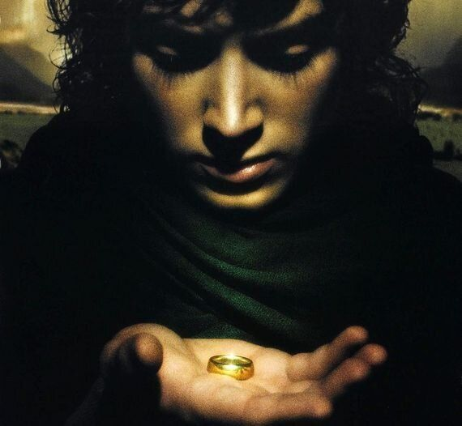
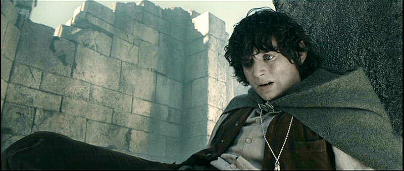
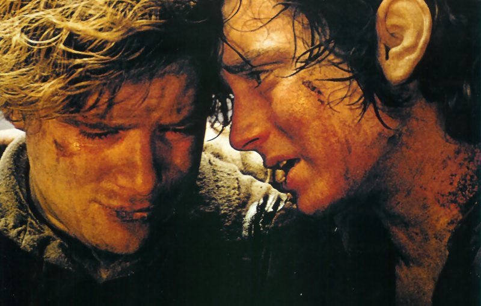

<!DOCTYPE html>
<html>
  <head>
    <meta charset="utf-8" />
    <link
      rel="stylesheet"
      type="text/css"
      href="styles/frodo-mental-health-stylesheet.css"
    />
    <title>Frodo Blog</title>
  </head>
</html>
<body>
  
  <h1>On Frodo and Mental Health</h1>
  <h2>Matt Goodman</h2>
  <p class="para-style-1">
    Frodo Baggins is not your typical alpha leading-hobbit. In many ways, Frodo
    is an unsympathetic main character; introverted, morose, uncommunicative, he
    even unforgivably abandons his loyal companion Samwise Gamgee after Sam has
    travelled half the world with him. This is explained by the negative
    influence of the One Ring- in possibly the worst ever instance of ‘taking
    the rubbish out’, Frodo must carry the vessel of all evil halfway across the
    world to the only place it can be safely supposed of. But what if we ignore
    the ring, or imagine it as a metaphor for depression?
  </p>
  
  <p class="para-style-1">
    There are certainly many similarities between Frodo’s experience and those
    who sufferers from depression. The ring weighs on Frodo physically,
    literally dragging him down. Depression is sometimes described as being like
    a huge weight, making everyday life a drag. The ring frequently influences
    Frodo to engage in
    <a href="https://www.youtube.com/watch?v=DqdDmrUuvx8">
      risky and self-destructive behaviour</a
    >, a behavioural pattern often associated with depression. Frodo’s journey
    through Middle Earth can seem like one the journey of one suffering from
    depression- impossible, exhausting, and with no end in sight. Elijah Wood
    portrays this excellently in his body language and his facial expressions-
    the sense of utter weariness, of a great internal unexpressed struggle, of
    forcing himself to continue beyond hope. Watch the films without the ring
    and you’re watching a depressed hobbit on a very long hike.
  </p>
  <p class="para-style-1">
    It’s not just depression- several of Frodo’s experiences are congruent with
    anxiety. Axiety is like the Nazgul: shrieking black demons that haunt
    Frodo’s every move.
    <a href="https://youtu.be/Cewdg-lxXXg?t=96">Their cries</a> leave him
    incapacitated, clutching his head in physical pain, his breath in raggedy
    gulps.
    <!--flashbacks, PTSD-->
    Then there’s his experiences
    <a href="https://youtu.be/GlqqGKZ3Uac?t=80">when he puts the ring on,</a>
    which are remarkably similar to a panic attacks. In these short periods,
    Frodo is completely disassociated from the world around him, in a state of
    utter terror and laid bare before a terrible, all-seeing and judgemental
    Great Eye from which he cannot escape or hide.<!--Add more evidence, more people's stories of panic attacks-->
  </p>
  <p class="para-style-1">
    Things could go badly for Frodo, were it not for Sam. Sam cannot carry
    Frodo’s burden, but he can help him in other ways. He cares for Frodo,
    looking out for him, providing him with companionship, cooking him
    <a href="https://youtu.be/JXuqJ4c1dxE?t=59">delicious nutritious food,</a>
    advising him, rescuing him from trouble-sometimes of Frodo’s own making. Sam
    is patient and encouraging. He even goes as far as to physically carry Frodo
    when he can’t walk. Sam is an excellent example of caring for someone with
    mental health difficulties.
  </p>
  
  <p class="para-style-2">
    Of course, this isn’t really about mapping a fictional hobbit’s behaviour to
    established symptoms of mental illness. I,along with a suffering minority,
    have experience of mental illness. And one of the hardest things about it is
    that there’s very external signs of the internal suffering we experience.
    Things are starting to change, with various publicfigures pushing mental
    illness up the public agenda as something we should be concerned about.
    These discussions around mental illness are usually earnest aspirations for
    change, rather than a natural part of our conversation and media.
  </p>
  <p class="para-style-2">
    In fairness, various Hollywood films portray anxiety and PTSD, often as part
    of the psychological thriller genre. These films feature what I would call
    egitimate reasons for fear - war, violence, and murder. The kind of everyday
    anxiety around work, social situations or self-image is too banal to make it
    to the silver screen. Even fewer films portray depression, and for good
    reason. After all, how would you make a film about depression not, well,
    depressing? How would you make watching one of the worst experiences a
    person can go through, appealing enough that people would watch it? An even
    more fundamental question is how you would even make it clear that character
    in question is depressed. The contrast between the internal state of a
    depressed person and their outside appearance is often such that their
    depression goes unnoticed by the outside world.
  </p>
  <p class="para-style-2">
    This is part of what makes the ring useful as a metaphor- having an external
    locus for Frodo’s suffering makes for an understandable visual cue. If I can
    explain my attempts at pushing my experiences onto a seemingly unrelated
    fantasy-epic, it’s this: having ways to explain what my internal world is
    like helps me, and it seems help others too. This is the hope of this blog-
    of finding understandable, relatable, sometimes funny ways of explaining
    mental illness.I'm hoping that this will help bridge the gap between the
    inner self and the outer facade that I and others with mental illness feel,
    and between those with many and no experiences of mental illness. I hope
    that writing about painful inner experiences will help us all realise both
    thespectrum and shared aspects of mental suffering.
  </p>
</body>
